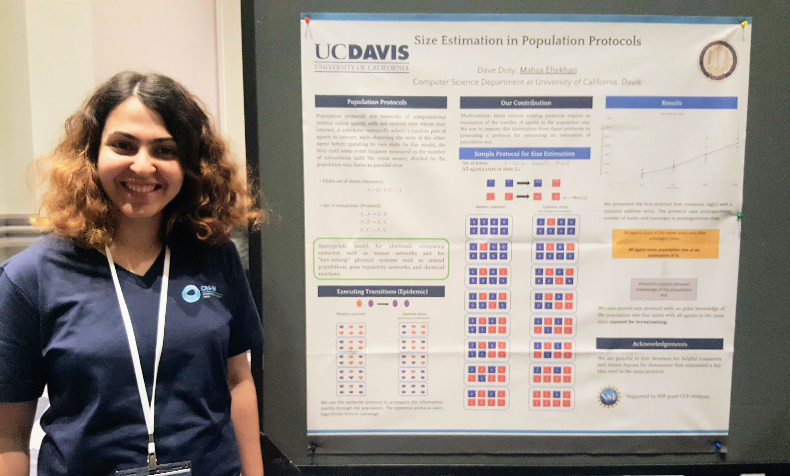

I am working on population protocols, an appropriate model for electronic computing scenarios such as sensor networks and for ''fast-mixing'' physical systems such as chemical reactions, gene regulatory networks, and animal populations.
Population protocols are a complete network of agents without any control over whom they're going to interact. A random scheduler repeatedly selects two agents to interact: they agents update their memory according to the rules of the protocol and their current states.
Exact and aproximate population size counting
We considered the problem of counting (both exact and approximation) the number of agents in population protocols. This problem is motivated by many existing protocols that assume the population size is known to the agents in advance.
- Exact size counting in uniform population protocols in nearly logarithmic time
- [DISC BA] [arXiv]
- Efficient Size Estimation and Impossibility of Termination in Uniform Dense Population Protocols
- [PODC] [arXiv]
- A survey of size counting in population protocols
- [arXiv]
The exact majority problem in population protocol
Dynamic size coutning in population protocols
Message complexity of population protocol